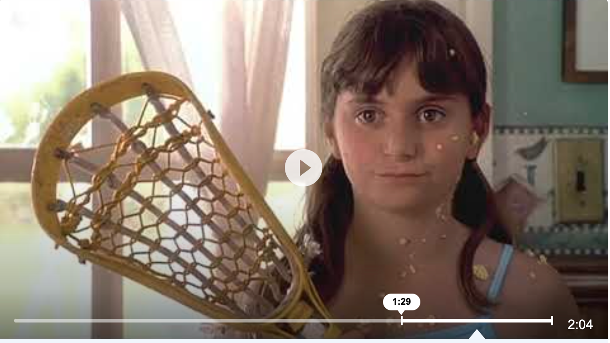

Movies
My favorite movies are Cheaper by the Dozen 1 and 2 and Just Go with It. I love the Cheaper by the Dozen movies because they remind me of my childhood and make me feel nastalgic. I also love Just Go With It because my family went to the hotel they go to in Hawaii. This movie always reminds me of this trip and how fun it was. My siblings and me watch this movie over and over again because it is so funny and has so many good memories attached to it. I also love Adam Sandler and Jenifer Aniston. Below I attached the trailer to Cheaper By the Dozen and if you click the picture it will take you to YouTube where you can watch it.
